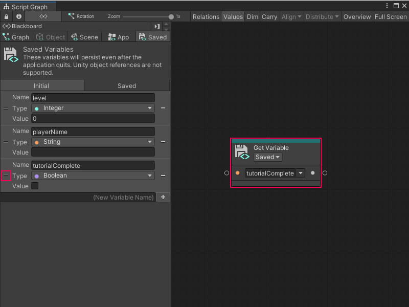
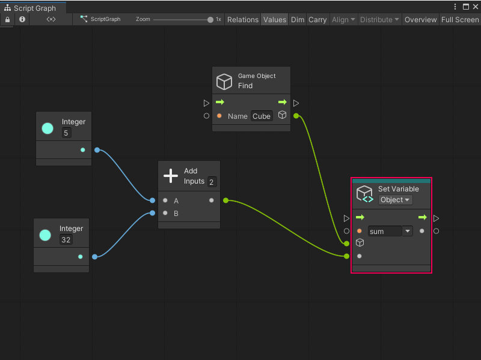

Create and add a variable to a Script Graph¶
You can create and add a variable to a Script Graph in one of two ways: use the Graph window’s Blackboard, or add a node to a graph.
[!NOTE] You can’t add a Flow variable to a graph from the Blackboard. For more information on Flow variables, see Variables.
Create and add a new variable through the Blackboard¶
To create a new variable in the Blackboard and add it to a graph:
With a graph open in the Graph window, open the Blackboard.
In the Blackboard, select the scope for the variable you want to add: Graph, Object, Scene, App, or Saved. For more information on variable scopes and when you can use each scope in your graph, see Variables.
In the (New Variable Name) field, enter a name for the new variable.
Do one of the following:
Press Enter.
Select the Add Variable (+) button.
In the Type list, select the data type for your variable. For more information on types, see Object types.
In the Value field, enter or modify the default value for your variable.
To add the node to your graph, click and drag from the Handle (=) on the variable’s definition in the Blackboard into the Graph Editor.
Visual Scripting adds a new Get Variable node for your variable to your graph.

Create and add a new variable through the Graph Editor¶
To create a Flow variable or another new variable directly in a graph:
[!includewith-graph-open-ff]
Select the Variables category.
Select the scope for the variable you want to add: Flow, Graph, Object, Scene, Application, or Saved. For more information on variable scopes and when you can use each scope in a graph, see Variables.
Select the Set
<Scope>Variable node, where<Scope>is the scope you selected in the previous step. Visual Scripting adds a new Set Variable node to the graph.In the Name field, enter a name for the new variable.
(Object variables only) In the GameObject field, indicated by a GameObject icon on the node, specify the GameObject where you want to create the variable. Do one of the following:
Select the object picker (circle icon) and select a GameObject.
Attach a node to the field’s data input port that outputs a GameObject.
Leave the field as the default value of This to use the GameObject where you attached the Script Graph to a Script Machine.
To set a default value for your variable, connect another node that outputs the value you want to the Set Variable node’s data input port.

Next steps¶
After you’ve added a variable to your graph, you can add nodes, create node groups, or add a Subgraph.